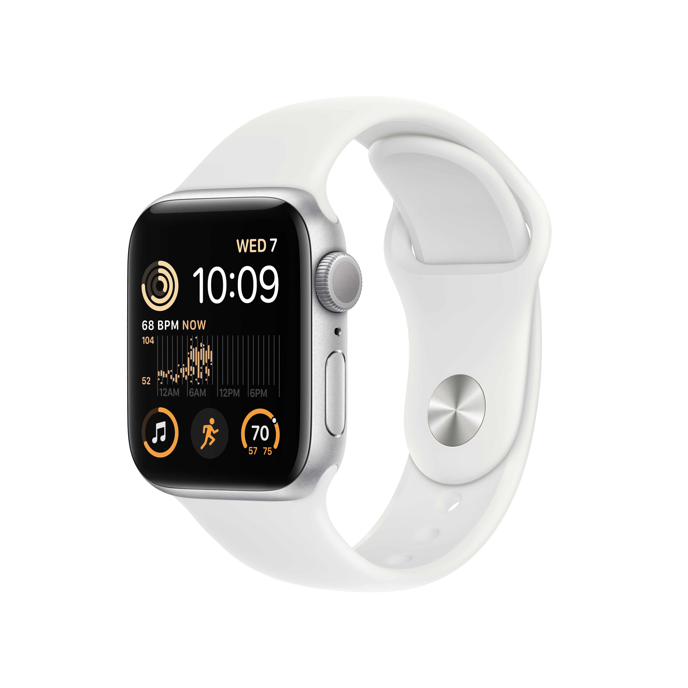
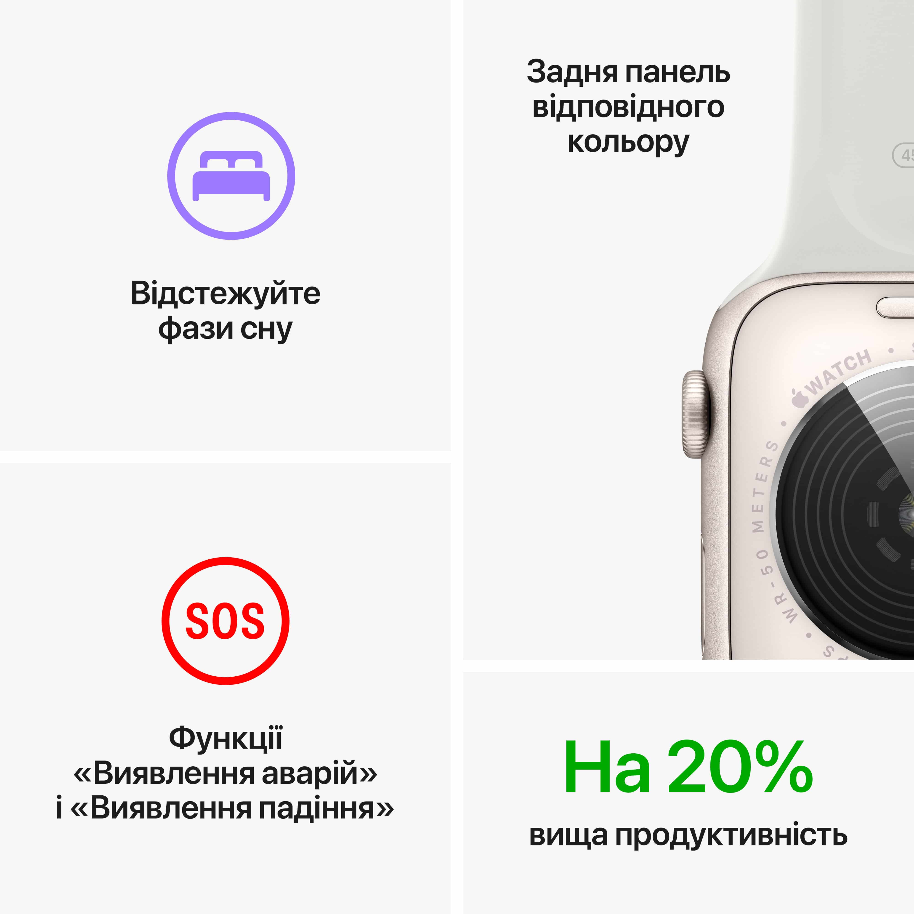
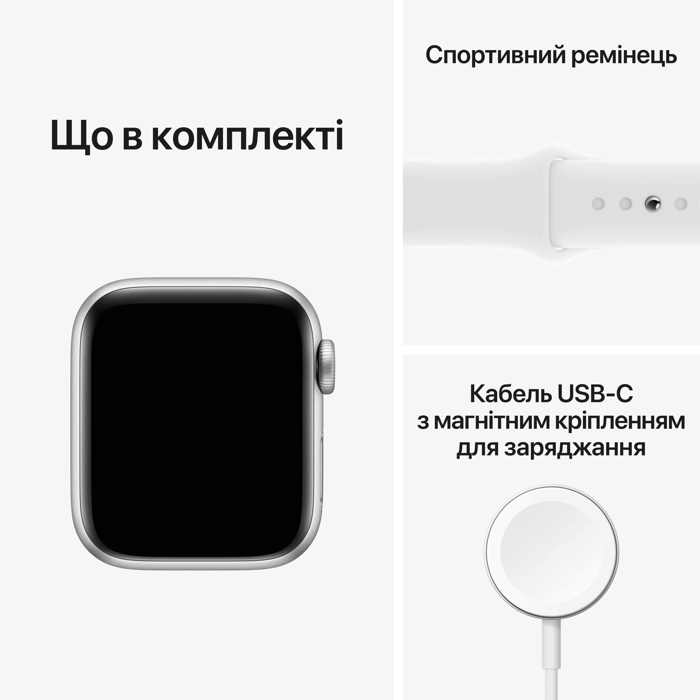

Можна закохатися.
З багатьох причин.

Основні функції для підтримання здоров’я, безпеки й активного способу життя.


Основні характеристики
- Відповідайте на дзвінки
та повідомлення просто
із зап'ястя
- До 20% швидший
за попередній
Apple Watch SE
- Розширені функції безпеки, зокрема Виявлення падіння, Сигнал SOS і Виявлення аварій
- Відстежуйте свою активність протягом дня з Apple Watch,
а потім переглядайте
тенденції в додатку «Фітнес» на iPhone
- Покращений додаток «Тренування» з удосконаленими підходами
до вправ
- Отримуйте сповіщення
про високий, низький і порушений серцевий ритм
- Слухайте улюблену музику, подкасти й аудіокниги
(для використання в моделях
GPS)
- Захист від води
- Відстеження сну дає
змогу дізнатися,
скільки часу ви перебували
у фазах швидкого,
повільного та глибокого сну
- watchOS 9 підтримує покращений додаток «Тренування», новий додаток «Ліки», фази сну та доє змогу краще відстежувати ритм серця
